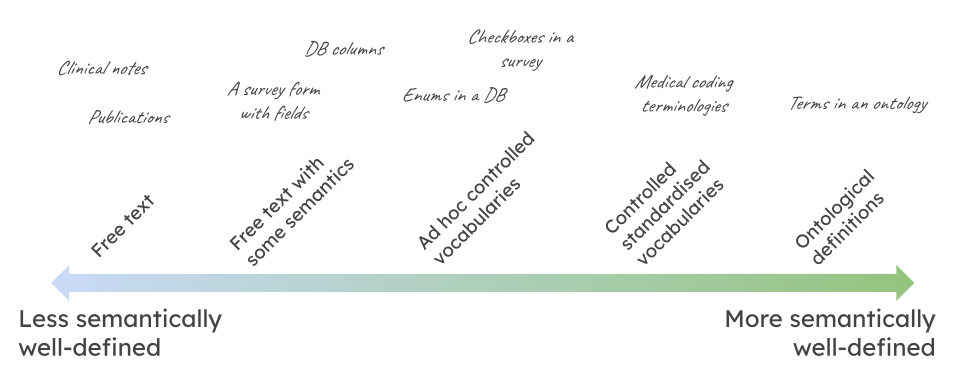
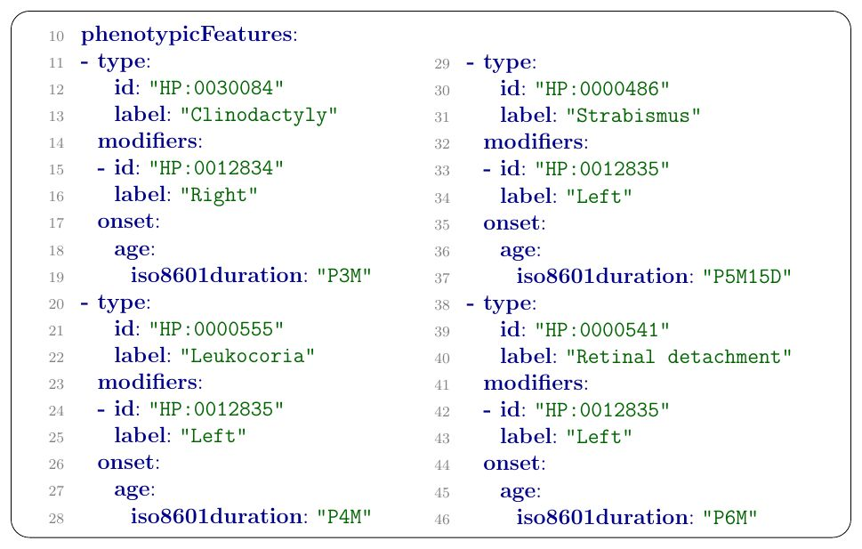

Phenotype data in practice
Phenotype Data in practice¶
Overview¶
The goals of this document are:
- Give a sense of the contexts in which phenotype data is produced (research and clinical)
- Give a sense of the shape of different styles of phenotype data
Table of contents¶
Some examples of phenotype data¶
The interested reader should familiarise themselves with some of the following resources. They are a tiny glimpse into the diverse world of phenotype data, and the purpose of this list is to convince how prevalent and diverse phenotype data is across the biomedical domain.
| Category | Example datasets | Example phenotype |
|---|---|---|
| Gene to phenotype associations | Online Mendelian Inheritance in Man (OMIM), Human Phenotype Ontology (HPO) annotations, Gene Ontology (GO) | Achondroplasia (associated with FGFR3 gene mutations) |
| Gene to disease associations | The Cancer Genome Atlas (TCGA), Online Mendelian Inheritance in Man (OMIM), GWAS Catalog | Breast invasive carcinoma (associated with BRCA1/BRCA2 mutations) |
| Phenotype-phenotype semantic similarity | Human Phenotype Ontology (HPO), Monarch Initiative | Cardiac abnormalities (semantic similarity with congenital heart defects) |
| Quantified trait data (QTL etc) | NHGRI-EBI GWAS Catalog, Genotype-Tissue Expression (GTEx), The Human Protein Atlas | Height (quantified trait associated with SNPs in genomic regions) |
| Electronic health records | Medical Information Mart for Intensive Care III (MIMIC-III), UK Biobank, IBM Watson Health | Acute kidney injury (recorded diagnosis during ICU stay) |
| Epidemiological datasets | Framingham Heart Study, National Health and Nutrition Examination Survey (NHANES), Global Burden of Disease Study (GBD) | Cardiovascular disease (epidemiological study of risk factors and disease incidence) |
| Clinical trial datasets | ClinicalTrials.gov, European Union Clinical Trials Register (EUCTR), International Clinical Trials Registry Platform (ICTRP) | Treatment response (clinical trial data on efficacy and safety outcomes) |
| Environmental exposure datasets | Environmental Protection Agency Air Quality System (EPA AQS), Global Historical Climatology Network (GHCN), National Centers for Environmental Information Climate Data Online (NCEI CDO) | Respiratory diseases (association with air pollutant exposure) |
| Population surveys e.g., UK Biobank | UK Biobank, National Health Interview Survey (NHIS), National Health and Nutrition Examination Survey (NHANES) | Chronic diseases (population-based study on disease prevalence and risk factors) |
| Behavioral observation datasets | National Survey on Drug Use and Health (NSDUH), Add Health, British Cohort Study (BCS) | Substance abuse disorders (survey data on drug consumption and addiction) |
Different shapes of phenotype data¶
Phenotype data comes in many different shapes and forms. In the following, we will describe some of the most common features of such data:
Standardised/non-standardized¶

Phenotype data can be standardised to varying degrees. It is not uncommon for data to be completely unstandardised. Unfortunately, only a fraction of the available data is actually annotated using terms from controlled phenotype ontologies. Here are some of the more "typical" kinds of data on the standardised/non-standardised spectrum:
- Free text in clinical notes and scientific publications. For example, the paper "Rare genetic variants impact muscle strength" (Huang et al.) mentions phenotypic traits including muscle strength, hand grip strength, body size, body weight, BMI, and whole-body muscle mass.
- Free text in specific database fields (for example a "height" column in a table about measurements of Giraffes)
- Controlled but non-standardised vocabulary like enums in a datamodel (for example the keyword "abnormal" in the ZFIN example above)
- Controlled standardised vocabulary (e.g. SNOMED CT)
- Controlled vocabulary terms with well defined semantics (e.g. ontology terms from HP or MP)
Quantitative/qualitative¶
Qualitative and quantitative phenotype data represent two fundamental ways of describing characteristics or traits in biology, each providing different types of information:
Qualitative Phenotype Data describes qualities or characteristics that are observed but not measured with numbers. It often involves categorical or descriptive information. - Examples: The presence or absence of a specific physical trait (like eye color or wing shape in animals) or types of behavior (aggressive vs. passive). - Analysis: Qualitative data is analyzed by categorization and identification of patterns or variations. It is more about the 'type' or 'kind' of trait rather than its 'amount'. - Interpretation: Since it's descriptive, this data relies on subjective interpretation and classification.
Quantitative Phenotype Data is numerical and quantifies traits. It involves measurements of characteristics, often allowing for more precise and objective analysis.
- Examples: Height, weight, blood pressure, cholesterol levels, or the number of fruit produced by a plant. Quantitative traits can often be measured on a continuous scale, for example height of 35 cm, weight of 67 KG or blood pressure of 120/80.
- Analysis: It involves statistical analysis, such as calculating mean, median, standard deviation, and applying various statistical tests. It allows for a more objective and replicable assessment.
- Interpretation: Quantitative data provides a more concrete and measurable understanding of traits, making comparisons and statistical testing more straightforward.
Pre-coordinated vs. post-coordinated¶

Pre-coordinated phenotype data is data where the various aspects of the phenotype term, such as the bearer ("retinal blood vessels") and the characteristic ("Attenuation", or "thinning/narrowing"), and the modifier (in the case of HPO terms, simply abnormal), are combined ("coordinated") into a single term, e.g. HP:0007843 "Attenuation of retinal blood vessels".
Pre-coordinated phenotype data is popular in the clinical domain, where a lot of observations are taken by a clinician and recorded as "phenotypic abnormalities" with the goal of eventual diagnosis. Phenopackets such as the one below are an emerging standard to capture and sharing disease and phenotype information about patients. Phenotypic features are captured in phenopackets as pre-coordinated HPO terms.

Apart from clinical diagnostics, pre-coordinated phenotype terms are used in many other contexts such as model organism research (e.g. IMPC) or the curation of Genome Wide Association Studies. For example, IMPC can be searched using the pre-coordinated term "enlarged heart" to find knockout mice with this phenotype, and similarly the GWAS Catalog can be browsed by the pre-coordinated term "cardiac hypertrophy" to find gene assocations with the phenotype from GWAS studies.
Post-coordinated phenotype curation simply means that the different constituents of phenotype (characteristic, bearer, modifier etc) are captured individually.
This has certain advantages.
For example, the phenotype space is enormous, as you can measure variations in many observable charactertics from chemical entities present in the blood, the microbiome to a host of morphological and developmental abnormalities. Instead of having individual (controlled vocabulary) terms for increased level of X, decreased level X, abnormal level of X, increased level of X in blood for thousands of chemical compounds synthesized by the human body, you just have "increased level", "blood" and all the chemical compounds, and capture them separately.
There are at least three flavours (probably more) of post-coordinated phenotype curation prevalent in the biomedical domain (four if you count quantified phenotypes):
Trait + modifier pattern is used for example by databases such as the Saccharomyces Genome Database (SGD). Here are some examples:
| dateAssigned | evidence/publicationId | objectId | phenotypeStatement | phenotypeTermIdentifiers/0/termId | phenotypeTermIdentifiers/1/termId | conditionRelations/0/conditions/0/chemicalOntologyId | conditionRelations/0/conditions/0/conditionClassId |
|---|---|---|---|---|---|---|---|
| 2010-07-08T00:07:00-00:00 | PMID:1406694 | SGD:S000003901 | abnormal RNA accumulation | APO:0000002 | APO:0000224 | ||
| 2006-05-05T00:05:00-00:00 | PMID:785224 | SGD:S000000854 | decreased resistance to chemicals | APO:0000003 | APO:0000087 | CHEBI:78661 | ZECO:0000111 |
| 2010-07-07T00:07:00-00:00 | PMID:10545447 | SGD:S000000969 | decreased cell size | APO:0000003 | APO:0000052 |
APO:0000002(abnormal) andAPO:0000003(decreased) are modifiers.APO:0000087(resistance to chemicals),APO:0000224(RNA accumulation),APO:0000052(cell size) are biological attributes/traits.CHEBI:78661(borrelidin) is recorded as an experimental condition, but should probably be interpreted as part of the bearer expression.- Note: SGD has different kinds of phenotype data, and it should be carefully evaluated which one it is.
Info
Data was obtained from the Alliance of Genome Resources on the 30.03.2023 and simplified for illustration.
The bearer-only pattern is used by many databases, such as Flybase. In the data, we only find references of bearers, such as anatomical entities or biological processes. Instead of explicitly stating phenotypic modifiers (abnormal, morphology, changed), it is implicit in the definition of the dataset.
| dateAssigned | evidence/crossReference/id | evidence/publicationId | objectId | phenotypeStatement | phenotypeTermIdentifiers/0/termId |
|---|---|---|---|---|---|
| 2024-01-05T11:54:24-05:00 | FB:FBrf0052655 | PMID:2385293 | FB:FBal0016988 | embryonic telson | FBbt:00000184 |
| 2024-01-05T11:54:24-05:00 | FB:FBrf0058077 | PMID:8223248 | FB:FBal0001571 | larva | FBbt:00001727 |
FBbt:00000184(embryonic telson) andFBbt:00001727(larva) are bearer terms.- The modifier is implicit in the data rather than explicitly stated. For example, Flybase states on their website about the Dmel\torrv66 Allele (FBal0016988) that the "phenotype manifests in the embryonic telson".
- Note: FlyBase has different kinds of phenotype data (including pre-coordinated), and it should be carefully evaluated which one is which prior to integration.
Info
Data was obtained from the Alliance of Genome Resources on the 30.03.2023 and simplified for illustration.
The most complex pattern for phenotype descriptions which essentially decomposes the entire phenotype expression into atomic consituents can be found, for example, in the The Zebrafish Information Network (ZFIN).
Examples:
| Fish ID | Affected Structure or Process 1 subterm ID | Affected Structure or Process 1 subterm Name | Post-composed Relationship ID | Post-composed Relationship Name | Affected Structure or Process 1 superterm ID | Affected Structure or Process 1 superterm Name | Phenotype Keyword ID | Phenotype Keyword Name | Phenotype Tag | Affected Structure or Process 2 subterm ID | Affected Structure or Process 2 subterm name | Post-composed Relationship (rel) ID | Post-composed Relationship (rel) Name | Affected Structure or Process 2 superterm ID | Affected Structure or Process 2 superterm name | Publication ID |
|---|---|---|---|---|---|---|---|---|---|---|---|---|---|---|---|---|
| ZDB-FISH-150901-29105 | ZFA:0009366 | hair cell | BFO:0000050 | part_of | ZFA:0000051 | otic vesicle | PATO:0000374 | increased distance | abnormal | ZFA:0009366 | hair cell | BFO:0000050 | part_of | ZFA:0000051 | otic vesicle | ZDB-PUB-171025-12 |
| ZDB-FISH-150901-29105 | ZFA:0009366 | hair cell | BFO:0000050 | part_of | ZFA:0000051 | otic vesicle | PATO:0000374 | increased distance | abnormal | ZFA:0009366 | hair cell | BFO:0000050 | part_of | ZFA:0000051 | otic vesicle | ZDB-PUB-171025-12 |
| ZDB-FISH-150901-11537 | ZFA:0000051 | otic vesicle | PATO:0001905 | has normal numbers of parts of type | normal | ZFA:0009366 | hair cell | BFO:0000050 | part_of | ZFA:0000051 | otic vesicle | ZDB-PUB-150318-1 | ||||
| ZDB-FISH-150901-18770 | ZFA:0000119 | retinal inner nuclear layer | PATO:0002001 | has fewer parts of type | abnormal | ZFA:0009315 | horizontal cell | BFO:0000050 | part_of | ZFA:0000119 | retinal inner nuclear layer | ZDB-PUB-130222-28 | ||||
| ZDB-FISH-190806-7 | BSPO:0000084 | ventral region | BFO:0000050 | part_of | ZFA:0000101 | diencephalon | PATO:0002001 | has fewer parts of type | abnormal | ZFA:0009301 | dopaminergic neuron | BFO:0000050 | part_of | ZFA:0000101 | diencephalon | ZDB-PUB-190216-5 |
| ZDB-FISH-190807-7 | BSPO:0000084 | ventral region | BFO:0000050 | part_of | ZFA:0000101 | diencephalon | PATO:0001905 | has normal numbers of parts of type | normal | ZFA:0009301 | dopaminergic neuron | BFO:0000050 | part_of | ZFA:0000101 | diencephalon | ZDB-PUB-190216-5 |
| ZDB-FISH-190807-8 | BSPO:0000084 | ventral region | BFO:0000050 | part_of | ZFA:0000101 | diencephalon | PATO:0002001 | has fewer parts of type | abnormal | ZFA:0009301 | dopaminergic neuron | BFO:0000050 | part_of | ZFA:0000101 | diencephalon | ZDB-PUB-190216-5 |
| ZDB-FISH-150901-29105 | ZFA:0000101 | diencephalon | PATO:0001555 | has number of | normal | ZFA:0009301 | dopaminergic neuron | BFO:0000050 | part_of | ZFA:0000101 | diencephalon | ZDB-PUB-161120-7 | ||||
| ZDB-FISH-210421-9 | ZFA:0009290 | glutamatergic neuron | BFO:0000050 | part_of | ZFA:0000008 | brain | PATO:0040043 | increased proportionality to | abnormal | ZFA:0009276 | GABAergic neuron | BFO:0000050 | part_of | ZFA:0000008 | brain | ZDB-PUB-191011-2 |
| ZDB-FISH-210421-9 | ZFA:0009290 | glutamatergic neuron | BFO:0000050 | part_of | ZFA:0000008 | brain | PATO:0040043 | increased proportionality to | abnormal | ZFA:0009276 | GABAergic neuron | BFO:0000050 | part_of | ZFA:0000008 | brain | ZDB-PUB-191011-2 |
Lets break down the second to last row:
ZFA:0009290(glutamatergic neuron): The primary entity whose characteristic is being observedBFO:0000050(part of): a relation used to connect the primary entity to the structure it is part ofZFA:0000008(brain): the location of the primary entity being observedPATO:0040043(increased proportionality to): the modified characteristic being observed- abnormal: the change modifier (note: not an ontology term)
ZFA:0009276(GABAergic neuron): the secondary entity being observed in relation to which the characteristic is measuredZFA:0000008(brain): the location of the secondary entity
Example: brain increased proportionality to glutamatergic neuron GABAergic neuron brain, abnormal
The interested reader may look at an integrated version of that huge post-coordinated expression here (brain increased proportionality to glutamatergic neuron GABAergic neuron brain, abnormal - ZP:0141834).
Info
Data was obtained from ZFIN (Phenotype of Zebrafish Genes) on the 30.03.2023 and simplified for illustration.
As one can see in the last example, bearers can be anything from simple atomic entities to arbitrarily complex compositions:
- "lysine" (
lysine) - "lysine in the blood" (
lysinepart_ofblood) - "lysine in heart muscle cells" (
lysinepart_ofcellpart_of (musclepart ofheart)) - "lysine in the cytoplasm of heart muscle cells" (
lysinepart_of (cytoplasmpart_of (cellpart_of (musclepart ofheart)))) - etc, etc